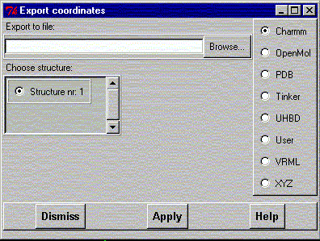
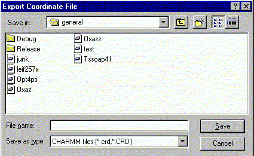

**************************************************************************
Export coordinates widget
Leif Laaksonen CSC 1996
**************************************************************************
Export atom coordinate information in some formats. Choose first the file format and select then a file name or click at the "Browse" button to get a file selector.
If several molecular systems are read into gOpenMol select which structure will be exported.
The VRML file export facility is very crude. Currently it only supports line drawing, CPK and the licorice display styles.

Write a file name or click at one of the files in the window.

Line command: see export command
**************************************************************************
LUL/1996
**************************************************************************